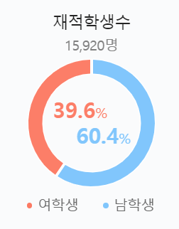
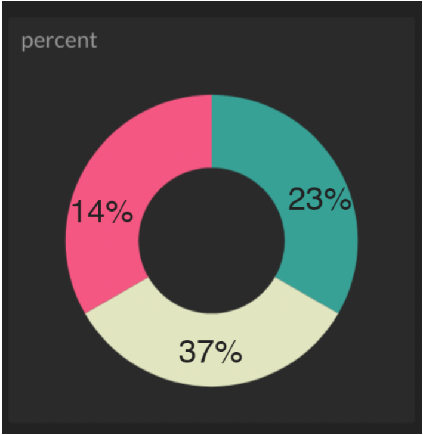
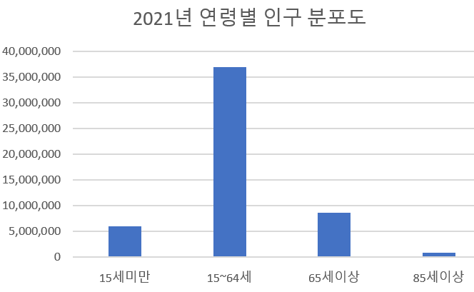
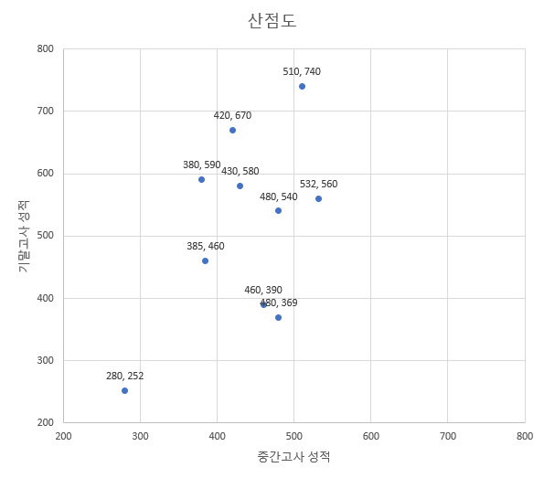
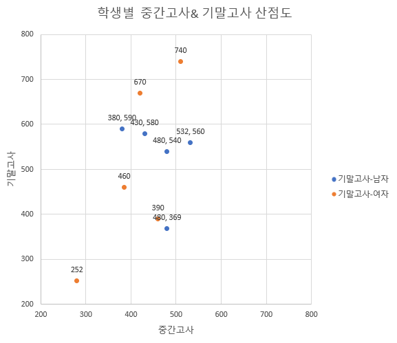

지난시간에는 확률변수에서 표본들을 관찰하는 방법에 대해 알아봤습니다.
이렇게 표본들을 뽑았는데 이제 무엇을 하면 될까요?
우리가 진짜 궁금한 건 표본들을 발생시킨 확률변수들이 어떤 특징을 가지고 있는 지입니다.
표본들을 뽑아서 시각화하면 표본의 특성을 알 수 있습니다.
표본들이 이러한 특성을 가지고 있으니, 이 표본들을 발생시킨 확률변수도 이런 특성을 가지고 있겠구나!라고 생각할 수 습니다.
따라서 이런 정보를 효과적으로 뽑아낼 수 있도록 도와주는 게 데이터 시각화입니다.
또는 탐색적 데이터 분석 (EDA; Exploratory data analysis) 라고 부르기도 합니다.
크게 파이차트, 히스토그램, 줄기-잎 그래프, 산점도 등의 방법이 있습니다.
(1) 파이차트 : 파이차트는 말 그대로 파이(pie)모양을 닮아서 붙여진 이름입니다.
전체100%에서 각각 항목이 얼마나 차지하는 지 알 수 있어서 직관적입니다.

출처: 네이버
위 사진은 세종대학교 재적학생 수를 파이차트로 표현한 그림입니다.
오호, 세종대학교에는 남학우분들이 더 많이 다닌다는 것을 쉽게 알 수 있습니다.
하지만 파이차트를 볼 때는 항상 주의하여야 합니다.
직관적이다보니 그만큼 속이기도 쉽답니다. 그림상으로는 14%나 23%나 같은 비율을 차지하는 것처럼 보이는 오류가 있어요.
파이차트를 읽을때는 착시효과에 주의해야합니다

파이차트의 주의점을 더 알고 싶다면 아래 링크의 글을 읽어보세요.
출처:
(2) 히스토그램 or 바차트
-범주형 변수의 분포를 나타낼 때 유용
범주형변수(categorical variable)란? 변수가 갖는 고유한 값이 한정된 변수. 오히려 영어로 보면 더 직관적일 수 있습니다.
카테고리가 있는 변수. 예를 들어 나이를 10대, 20대, 30대, 40대, 50대, 60대,70대.. 이런 카테고리로 구분한다면
이 경우 나이는 범주형 변수가 된답니다.

통계청 인구조사 자료를 이용하여 만든 바 차트인데요,
15세~64세까지를 경제활동가능인구라고 합니다. 2021년 경제활동인구가 몇만명인지 알아보기 위해 데이터를 바 차트로 나누어보았습니다.
대략 3,600만명으로 보이네요.
(3) 산점도
두 변수의 관계를 나타내는 그래프입니다.
산점도는 두 변수의 관계를 알고 싶기때문에 탄생했습니다.
예를 들어 중간고사를 잘 본 학생은 기말고사도 잘 볼까? 라는 궁금증이 생겼다 해봅시다.
학생의 중간고사 점수, 기말고사 점수를 하나의 순서쌍으로 묶어서 x축 y축 좌표 평면에 점을 찍어보도록 하겠습니다.

산점도를 보시면 중간고사 점수가 높으면 기말고사 점수도 높겠구나 라고 판단할 수 있습니다.
그런데 성별에 따라 산점도를 구분하면 어떻게 될까요?

여학생의 경우 중간고사 점수가 높으면 기말고사 점수도 높아지는 추세가 보이는 데
남학생의 경우 중간고사 점수가 높지만 기말고사 점수는 조금씩 낮아지는 추세가 보입니다.
이처럼 산점도를 2개의 변수 (중간고사/기말고사)의 관계만 보고 판단하는 경우와 3개의 변수(성별/중간고사/기말고사)의 관계를 보고 판단하는 경우
해석이 달라지는 경우가 발생합니다.
이를 통계학에서는 심슨 패러독스 (simpsion's paradox)라고 합니다.
자료 전체 패턴에 영향을 주는 숨어있는 변수 (잠복변수)를 고려하지 않으면 정 반대의 해석을 할 수 있으니 유의하셔야합니다.
관심이 있다면 를 읽어보는 것을 추천드립니다